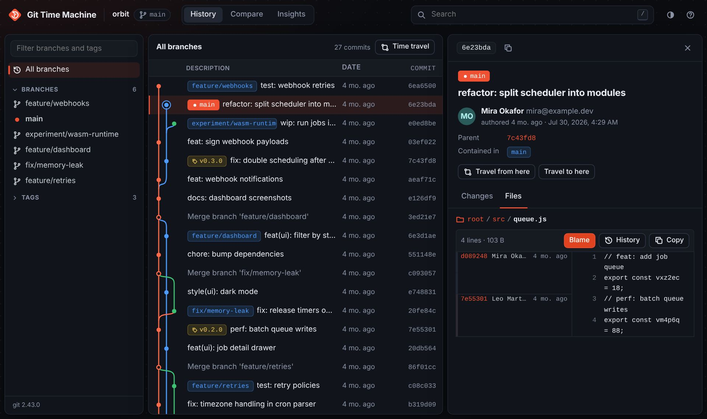
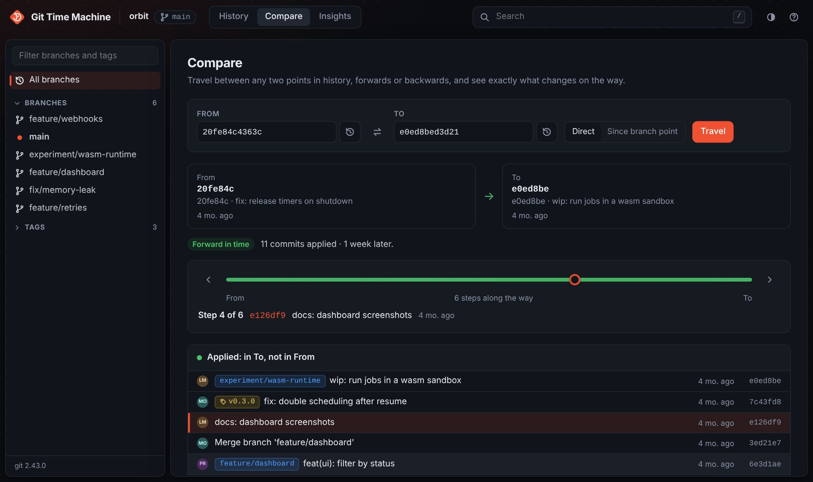
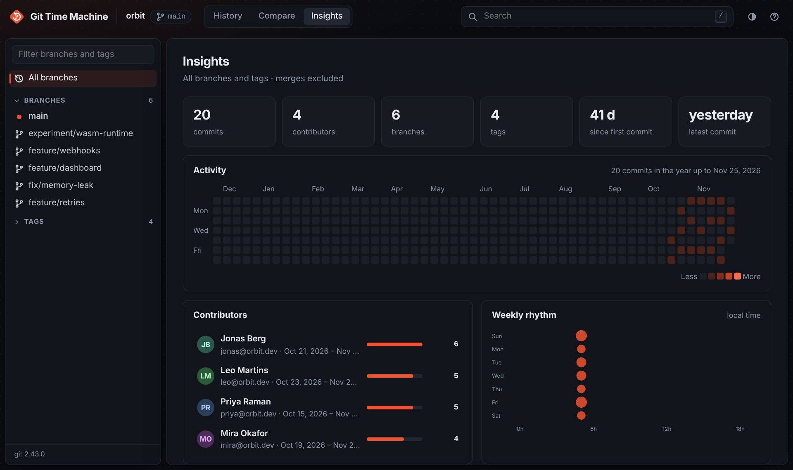

Documentation
Everything you need to explore a repository with git-tm, from the first run to time travel.
Install
git-tm needs Node.js 18.3 or newer and git on your PATH. It has no other dependencies.
npm install -g git-tmOr try it once without installing:
npx git-tmUsage
Run it inside any repository, or any folder within one:
git tmThen open http://localhost:7890, or add --open to open your browser automatically. The server keeps running until you press Ctrl+C.
As a Git subcommand
Git runs any program named git-<name> on your PATH as git <name>. npm installs the program as git-tm, so git tm and git-tm are the same thing. These all work:
git tm
git tm ../other-repo
git -C ../other-repo tm
git-tm --openUse git tm -h for help. Git handles git tm --help itself and looks for a manual page instead.
Options
| Option | Description |
|---|---|
[path] | Repository to open. Defaults to the current folder; any subfolder of a repository works. |
-p, --port <n> | Port to listen on. Default 7890; if it is busy, the next free port is used. |
--host <address> | Interface to bind. Default 127.0.0.1, so only your machine can connect. |
-o, --open | Open the browser once the server is running. |
--no-avatars | Do not load author pictures from GitHub or Gravatar; initials are shown instead. |
-v, --version | Print the version. |
-h, --help | Print help. |
History
The History view lists commits newest first with a graph of branch lanes and merges. Badges show the current branch, other local branches, remote branches and tags. Merge commits are drawn as hollow dots, and HEAD has a ring.
- All branches or one: by default every branch, remote and tag is shown. Click a branch, remote or tag in the sidebar to show only its history, and use the filter box to find refs quickly.
- Uncommitted changes appear as a row on top of
HEAD, and as an item in the sidebar. - Large repositories: the list only renders what is on screen and loads more history as you scroll.
- Live updates: when you commit, switch branches or fetch in a terminal, git-tm refreshes the sidebar and offers to refresh the history.
- Fetch: the download button runs
git fetch --all --prune. It is the only action that touches the network, and only appears when the repository has remotes.
Commits and diffs
Click a commit to open its details next to the list: the full message, author and committer, parents, and every branch and tag that contains it. If the repository has a GitHub, GitLab or Bitbucket remote, a button opens the commit there.
- Unified or split diffs, with changed words highlighted inside each line.
- Hide whitespace ignores indentation-only changes.
- Show full file expands a diff to the whole file.
- Merge commits can be compared against any of their parents.
- Small change sets open automatically; large ones load each file when you expand it.
Browse and blame
The Files tab of a commit shows the repository exactly as it was at that commit. Open any folder or file; for a file, Blame shows which commit last changed each line, and History lists every commit that touched it, following renames.

Time travel
The Compare view answers one question: what happens if I move from this point in history to that one? Pick a From and a To. Each can be a commit, branch, tag or, for To, your working tree. Type a name or short commit id, or use the picker button to search.
Directions
| Direction | When | What you see |
|---|---|---|
| Forward in time | To contains From | The commits applied on the way, and how much later To is. |
| Back in time | From contains To | The commits undone on the way back. |
| Across branches | They diverged | The commits undone back to the common ancestor, then the commits applied to reach To. |
The ⇄ button reverses the trip.
Stepping through the journey
The slider walks through the snapshots between From and To, one commit at a time: back along From's first parents to the common ancestor, then forward along To's. At each step the file list shows what has changed so far. Use the arrow buttons, the arrow keys, or click a commit in the Applied or Undone list to jump to it. The current step is kept in the URL, so you can share or reload it.

Picking commits from History
- Press t or the Time travel button, click the From commit, then the To commit, then Travel.
- In a commit's details, use Travel from here or Travel to here.
- With a commit open, Shift-click another to travel from the open one to it.

Direct or since branch point
Direct (a..b in the URL) shows everything that differs between the two snapshots. Since branch point (a...b) shows only what To added after the two diverged, the way a pull request does.
Search
Press / to focus the search box. Plain words search commit messages; prefixes narrow the search:
| Query | Finds |
|---|---|
fix login | Commits whose message contains the text (case-insensitive) |
author:ada | Commits by an author, matching name or email |
path:src/app.js | Commits that touched a file or folder (a file's History button also follows renames) |
code:parseConfig | Commits that added or removed a string (git log -S) |
a1b2c3d | Jumps straight to a commit |
Prefixes can be combined, for example author:ada path:src. Use quotes for spaces: author:"Ada Lovelace". Each active filter appears as a chip above the list; press Esc to clear.
Insights
Insights summarises the history of all branches, or of the branch selected in the sidebar: total commits, contributors, branches and tags, an activity heatmap for the past year, the weekly rhythm by day and hour, and the top contributors. Click a contributor to see their commits. Merge commits are left out, and .mailmap is respected.

Keyboard shortcuts
| Keys | Action |
|---|---|
| j k or ↓ ↑ | Next / previous commit |
| Enter | Open the selected commit (or pick it in time travel mode) |
| t | Time travel mode: pick From, then To |
| Shift + click | Travel from the open commit to the clicked one |
| ← → | Step through a journey in Compare |
| / | Search |
| Esc | Leave time travel mode, close the commit, or clear the search |
| g then h / c / i | Go to History / Compare / Insights |
| ? | Show all shortcuts |
Privacy and safety
- Local only. The server listens on
127.0.0.1and rejects requests addressed to any other host name, so other websites cannot read your repository through your browser. - Read-only. git-tm never checks out, commits, resets or rewrites anything. The only command that uses the network is Fetch, and only when you press it.
- Safe input. Everything you type is validated before it reaches git and can never be read as a git option.
- Avatars are loaded from GitHub for
users.noreply.github.comaddresses and from Gravatar otherwise. Use--no-avatarsto keep everything offline.
Troubleshooting
“Your browser blocked this request”
An ad blocker or privacy extension cancelled one of git-tm's requests to localhost. git-tm avoids the URL patterns these filter lists are known to block, but if it happens, allow localhost in the extension and reload.
“Lost connection to git-tm”
The git-tm process stopped, for example because its terminal was closed or Ctrl+C was pressed. Start it again; the page reconnects by itself.
Port already in use
git-tm moves to the next free port and prints the address it chose. Use -p to pick one yourself.
“No manual entry for git-tm”
That is Git answering git tm --help. Use git tm -h or git-tm --help.
“Not a git repository”
Run git-tm inside a repository or pass its path: git tm path/to/repo.
JavaScript API
Everything the web interface uses is also a library, so you can build your own tools on git-tm: scripts, CI reports, editor extensions or a different front end. It is an ES module with TypeScript declarations included and, like the CLI, no dependencies.
npm install git-tmReading a repository
openRepo() finds the repository that contains a folder and returns a Repo. Every method accepts any revision git understands: a branch, tag, commit id or HEAD~3.
import { openRepo } from "git-tm";
const repo = await openRepo(".");
const { branch, branches, tags } = await repo.info();
const { commits } = await repo.log({ ref: "main", limit: 20 });
const commit = await repo.commit("HEAD");
const { files, additions, deletions } = await repo.files("HEAD~1", "HEAD");
const { patch } = await repo.patch("HEAD~1", "HEAD", "README.md");Time travel
range(from, to) answers the same question as the Compare view: which commits a move applies and undoes, and the snapshots on the way.
const trip = await repo.range("v1.0.0", "main");
console.log(`${trip.addedCount} commits applied, ${trip.removedCount} undone`);
for (const step of trip.path) console.log(step.hash.slice(0, 7), step.subject);Repo methods
| Method | Returns |
|---|---|
info() | Current branch, HEAD, branches with ahead/behind counts, remote branches, tags and the number of uncommitted changes. |
log(options) | One page of commits. Options: ref, skip, limit, message, author, code (like git log -S), path, follow. |
commit(rev) | Full commit details, including the message body and branch and tag badges. |
containedIn(rev) | Branches, remote branches and tags that contain a commit. |
files(from, to) | Changed files with status, renames and line counts. Pass WORKTREE as to for uncommitted changes. |
patch(from, to, file) | The unified diff for one file. |
range(from, to) | Commits applied and undone between two points, the merge base, and the step-by-step path. |
tree(rev, dir) | Folder listing at a commit. |
blob(rev, file) | File contents at a commit. |
blame(rev, file) | The commit behind every line. |
insights(rev) | Commits per day, the weekly punch card and top contributors. |
run(args) | Run any other git command in the repository. |
Failures throw a GitError with a status code (400 for bad input, 404 for an unknown revision). The declaration files describe every field; your editor shows them as you type.
Embedding the web interface
Serve the git-tm interface from your own script, for example with a fixed port or for a repository chosen at run time:
import { openRepo, createServer, listen } from "git-tm";
const repo = await openRepo("path/to/repo");
const server = createServer(repo, { avatars: false });
const port = await listen(server, 7890, "127.0.0.1");
console.log(`http://localhost:${port}`);Keep the host on 127.0.0.1 unless you trust everyone on the network: anyone who can reach the server can read the repository.
Commit graph layout
The lane algorithm behind the History graph is pure and works in Node and the browser. Give it commits newest first; each one gets a g property with its column and the lines to draw. Pass the same state again to lay out the next page.
import { createLayout, layout } from "git-tm/graph";
const state = createLayout();
layout(state, commits);
for (const c of commits) console.log(c.g.col, c.g.down, c.g.pass);Entry points
| Import | Exports |
|---|---|
git-tm | openRepo, git, GitError, WORKTREE, webUrl, createServer, listen, createLayout, layout |
git-tm/git | openRepo, git, GitError, WORKTREE, webUrl |
git-tm/server | createServer, listen |
git-tm/graph | createLayout, layout, rowSvg |
The package is ESM only. From CommonJS, use await import("git-tm"), or require("git-tm") on Node 20.19 or 22.12 and newer.
How it works
git-tm starts a small HTTP server built only on Node's standard library. It asks git for machine-readable output (for example git log --format=…, git diff --raw -z, git blame --porcelain), so it supports everything your installed git does: worktrees, submodules, SHA-256 repositories and .mailmap. The interface is plain HTML, CSS and JavaScript modules, with no framework and no build step.
src/
cli.js # command-line entry point
index.js # JavaScript API
server.js # HTTP server and JSON API
git.js # git commands and output parsing
public/ # the web interface
types/ # TypeScript declarations
test/ # node:test suites
docs/ # this websiteContributing
Issues and pull requests are welcome on GitHub. There is nothing to install or build:
git clone https://github.com/nandhu-44/Git-Time-Machine.git
cd Git-Time-Machine
node src/cli.js .Run the tests with npm test. Releases are published to npm from GitHub Actions when a version tag is pushed (npm version patch, then git push origin main --follow-tags).
This website lives in the docs/ folder and is served by GitHub Pages.